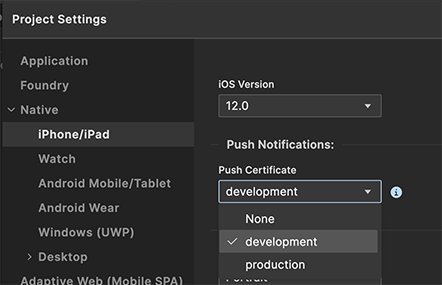
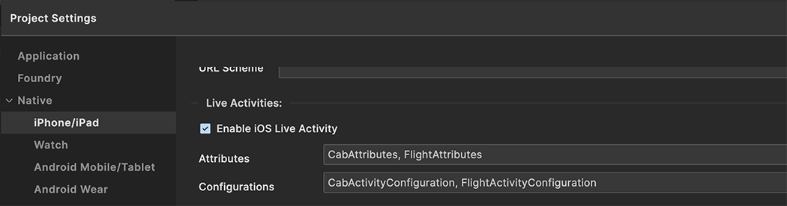
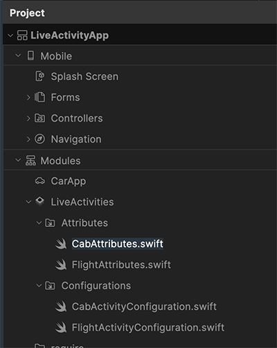
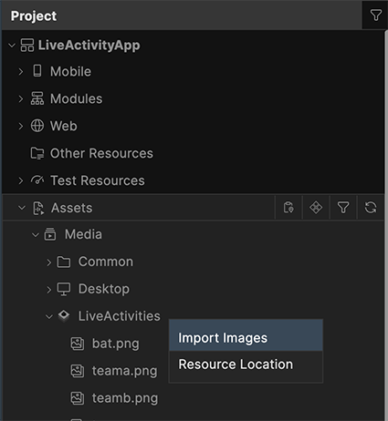

To enable live activities, you need to add the Permissions, Capabilities, Attributes, Configurations, and images (if any) in the Iris project. Follow these steps:
1. Information Property List.
To support Live Activities in your app, include the following key(s) in the infoplist_configuration.json file of the project:
```
{ "NSSupportsLiveActivities" : true, "NSSupportsLiveActivitiesFrequentUpdates" : true }
```
NSSupportsLiveActivities : (Boolean) Set this key to true to enable Live Activities in your app. This allows your app to display real-time updates on the Lock Screen and in the Dynamic Island.
NSSupportsLiveActivitiesFrequentUpdates : (Boolean) Set this key to true to allow your app’s Live Activities to receive frequent updates through remote push notifications. Make sure to configure these keys properly to enhance the Live Activities experience for users.
2. Push Capabilities.
In Volt Iris, Go to Project > Settings > Native > iPhone/iPad. Scroll down to find the Push Notifications section. Change the value of Push Certificate from None to either development or production, depending on your environment. Enabling push notifications is required if your Live Activity will be started using push capability or broadcast channel capability.

Fig 1 : Enabling Push Notifications Capability
3. Enable Live Activities
In Volt Iris, Go to Project > Settings > Native > iPhone/iPad. Scroll down to the ‘Live Activities’ section. Check the box labeled ‘Enable iOS Live Activity’.
Once you enable Live Activities, two text fields will appear:
a. Attributes: Enter the comma-separated names of the SwiftUI structs conforming to ActivityAttributes, which define the attributes for your Live Activities.
Example: CabAttributes, FlightAttributes
b. Configurations: Enter the comma-separated names of the SwiftUI structs conforming to Widget, which define the UI layout and behavior for the Live Activity.
Example: CabActivityConfiguration, FlightActivityConfiguration

Fig 2 : Enabling Live Activities
Important Considerations
When configuring ‘Attributes’ and ‘Configurations’ for Live Activities, keep the following in mind:
-
Both fields must be filled – You must provide at least one entry in both the ‘Attributes’ and ‘Configurations’ fields. If either field is left empty, Live Activities might not be enabled, even if the checkbox is ticked.
-
Names must match exactly (case-sensitive) – The names entered in these fields must exactly match the corresponding ActivityAttributes and Widget struct names (as well as the 'swift' module file names) used, including capitalization. Live Activities are case-sensitive, so any mismatch in letter casing will cause issues.
-
Unique names are required –
i) All ‘Attributes’ must have unique names.
ii) All ‘Configurations’ must have unique names.
iii) Duplicate names within either field can cause conflicts and unexpected behavior.
-
Multiple entries are allowed – You can add as many ActivityAttributes and Widget configurations as needed, separated by commas.
-
Refer to the next section - Refer to ‘Creating LiveActivities module’ for more information on generating the SwiftUI files.
Failing to follow these guidelines may result in Live Activities not being generated or functioning incorrectly.
4. Creating LiveActivities module.
i. Adding Attribute and Configuration Modules
-
Navigate to the Modules section in your Project settings.
-
Locate the newly available LiveActivities section.
-
Under LiveActivities, you will find two folders:
i) Attributes (for defining activity attributes)
ii) Configurations (for defining activity UI and behavior)
-
To add a new swift module:
i) Click the small dropdown arrow next to Attributes, then select New Swift Module. This will create a new Swift file inside the Attributes folder.
ii) Similarly, click the dropdown arrow next to Configurations, then select New Swift Module to create a new Swift file inside the Configurations folder.
-
You can add multiple Attribute Swift files and multiple Configuration Swift files under these folders as needed.
-
The names of modules in Attributes and Configurations folders must exactly match the comma-separated values specified in the respective Attributes and Configurations text fields found under Project > Settings > Native > iPhone/iPad - ‘Enable iOS Live Activity’. For example, if the Attributes field contains CabAttributes, FlightAttributes, you must have Swift modules named CabAttributes.swift and FlightAttributes.swift_Each of these modules should contain the implementation of their corresponding structs — struct CabAttributes and struct FlightAttributes. Having additional or missing modules that do not align with the values provided in the text fields may result in Live Activities being disabled.

Fig 3 : LiveActivities Modules
ii. Bringing SwiftUI Live Activity from Native to Volt MX
After developing a SwiftUI Live Activity in your native Xcode project, you need to modify it slightly to fit our structure. Follow these steps:
Step 1: Create a Widget Extension in Xcode
- Open your Xcode project.
- Go to File > New > Target.
- Select Widget Extension for iOS.
- Enter a Product Name (e.g., Sample).
- Tick the checkbox Include Live Activity.
- Click Finish and enable the extension when prompted.
After this, Xcode will generate a default Swift file called SampleLiveActivity.swift inside the new Widget Extension. The file will look like this:
``` import ActivityKit import WidgetKit import SwiftUI
struct SampleAttributes: ActivityAttributes { public struct ContentState: Codable, Hashable { var emoji: String // Dynamic property that changes over time } var name: String // Fixed property that does not change }
struct SampleLiveActivity: Widget { var body: some WidgetConfiguration { ActivityConfiguration(for: SampleAttributes.self) { context in VStack { Text("Hello (context.state.emoji)") } .activityBackgroundTint(Color.cyan) .activitySystemActionForegroundColor(Color.black) } dynamicIsland: { context in DynamicIsland { DynamicIslandExpandedRegion(.leading) { Text("Leading") } DynamicIslandExpandedRegion(.trailing) { Text("Trailing") } DynamicIslandExpandedRegion(.bottom) { Text("Bottom (context.state.emoji)") } } compactLeading: { Text("L") } compactTrailing: { Text("T (context.state.emoji)") } minimal: { Text(context.state.emoji) } .widgetURL(URL(string: "http://www.apple.com")) .keylineTint(Color.red) } } }
```
Step 2: Modify Your Code to Two Separate Files
To integrate your code into our product, you need to separate it into two files:
- Attributes File (Defines attributes and dynamic states)
- Configuration File (Defines the UI layout)
a. Attributes File (SampleAttributes.swift)
```
if canImport(ActivityKit)
import ActivityKit
@available(iOS 16.2, *) struct SampleAttributes: ActivityAttributes { public struct ContentState: Codable, Hashable { var emoji: String // Dynamic variable (required) } var name: String // Fixed variable (optional) }
endif
```
Key Changes:
- Added #if canImport(ActivityKit) - Ensures compatibility across platforms.
- Added @available(iOS 16.2, *) - Ensures Live Activity runs on iOS 16.2 and above.
- Fixed properties (var name: String) are optional – your Live Activity must have at least one dynamic (ContentState) variable.
b. Configurations File (SampleLiveActivity.swift)
``` import SwiftUI import WidgetKit
@available(iOS 16.2, *) struct SampleLiveActivity: Widget { var body: some WidgetConfiguration { ActivityConfiguration(for: SampleAttributes.self) { context in VStack { Text("Hello (context.state.emoji)") } .activityBackgroundTint(Color.cyan) .activitySystemActionForegroundColor(Color.black) } dynamicIsland: { context in DynamicIsland { DynamicIslandExpandedRegion(.leading) { Text("Leading") } DynamicIslandExpandedRegion(.trailing) { Text("Trailing") } DynamicIslandExpandedRegion(.bottom) { Text("Bottom (context.state.emoji)") } } compactLeading: { Text("L") } compactTrailing: { Text("T (context.state.emoji)") } minimal: { Text(context.state.emoji) } .widgetURL(URL(string: "http://www.apple.com")) .keylineTint(Color.red) } } }
```
Key Changes:
- Added import SwiftUI and import WidgetKit.
- Kept UI layout code unchanged.
- Added @available(iOS 16.2, *) - Ensures Live Activity runs on iOS 16.2 and above.
c. Understanding SampleAttributes and SampleLiveActivity
SampleAttributes
The SampleAttributes struct defines the data structure for a Live Activity. It consists of two parts: ContentState (dynamic variables) and fixed attributes. The ContentState struct contains emoji, which is a dynamic variable—this means its value can change over time, reflecting updates in real-time. The outer SampleAttributes struct contains name, which is a fixed variable that remains unchanged throughout the activity's lifecycle. While this example does not access ‘name’, it can be retrieved using context.attributes.name if needed. The @available(iOS 16.2, *) ensures compatibility since Live Activities are supported from iOS 16.2 onwards.
SampleLiveActivity
The SampleLiveActivity struct is responsible for defining how the Live Activity appears on the Lock Screen and Dynamic Island. The main UI for the Lock Screen and Notification Banner is defined inside ActivityConfiguration. In this example, it displays "Hello (context.state.emoji)".
The Dynamic Island UI is structured using multiple regions:
-
DynamicIslandExpandedRegion(.leading) - Displays content in the leading (left) area of the expanded Dynamic Island.
-
DynamicIslandExpandedRegion(.trailing) - Displays content in the trailing (right) area of the expanded Dynamic Island.
-
DynamicIslandExpandedRegion(.bottom) - Displays content in the bottom area of the expanded Dynamic Island, allowing for more details.
-
compactLeading - Defines content in the leading (left) area of the compact Dynamic Island.
-
compactTrailing - Defines content in the trailing (right) area of the compact Dynamic Island.
-
minimal - Displays content when the Dynamic Island is in its smallest (minimal) state.
This structured approach ensures that the Live Activity adapts dynamically across different screen placements, making it visible and interactive in multiple locations on iOS devices. For more information, refer to the official Apple doc for the design of live activities.
Step 3: Enter Names in Live Activities Settings
Once you have separated your code into Attributes and Configurations, enter the corresponding names under ‘Enable iOS Live Activity’ fields for ‘Attributes’ and ‘Configurations’ as explained earlier in ‘Enable Live Activities’:
- Attributes textfield - SampleAttributes
- Configurations textfield - SampleLiveActivity
This step ensures that our system recognizes your SwiftUI files correctly. In case of multiple live activity configurations, add comma separated values for both Attributes and Configurations.
Important Considerations
-
Unique Naming - The names of Attributes and Configurations must be unique. No two Configurations can reference the same Attributes.
-
Required Imports
i. Attributes files - Must include import ActivityKit.
ii. Configurations files - Must include import SwiftUI , import WidgetKit
iii. Failing to import these correctly may cause compilation errors.
-
Minimum iOS Version
@available(iOS 16.2, *) must be added in both Attributes and Configurations files. Live Activities are supported only from iOS 16.2.
-
Splitting Files
a. The native Xcode-generated SwiftUI file must be split into two separate files:
i. Attributes file (inside the Modules/LiveActivities/Attributes folder)
ii. Configurations file (inside the Modules/LiveActivities/Configurations folder)
b. A single combined file inside either folder will not work and may cause issues.
-
Correct Referencing Between Files
The Attributes struct name must match the one referenced inside Configurations.
Example:
``` struct SampleAttributes: ActivityAttributes { // Inside Attributes file
ActivityConfiguration(for: SampleAttributes.self) { context in // Inside Configurations file ```
- Registering Names in Enable iOS Live Activity Section
The struct (same as module) names of Attributes and Configurations must be entered in the respective text fields under ‘Enable iOS Live Activity’ settings. If names are not provided, Live Activities may disabled.
- Fixed Variables Are Optional
A Live Activity must have at least one ContentState variable but may or may not have fixed variables.
Example:
struct SampleAttributes: ActivityAttributes {
public struct ContentState: Codable, Hashable {
var emoji: String // Required (Dynamic variable)
}
var name: String // Optional (Fixed variable)
}
- Accessing Variables in Configurations
For the above SampleAttributes, the variables can be accessed in the configuration as follows:
a. Dynamic Variables (ContentState) - context.state.emoji
b. Fixed Variables (Attributes) - context.attributes.name
- Case Sensitivity and Syntax Awareness
All names are case-sensitive. Ensure consistency while referencing them. Be careful while copying files. Maintain correct bracket "{ }" structures. Follow naming conventions precisely.
By following these guidelines, you can ensure that your Live Activity setup is smooth and error-free.
iii. Adding Images to Live Activity in Configurations UI
If you need to reference any images within the Configurations UI of your Live Activity, you must first add them to the project's assets. To do this, navigate to Assets under Project. Find the ‘Media’ section under Assets. There will be a new section called LiveActivities. Next to LiveActivities, there will be a dropdown option labeled Import Images. Click on it to add the images you want to use in your Live Activity. These images can then be referenced inside your Live Activity UI as needed.

Fig 4 : LiveActivities Images
iv. Sample Use Case: A Cab Live Activity
Example of an ‘Attribute’ Swift File - CabAttributes.swift (Inside Attributes folder) -
```
if canImport(ActivityKit)
import ActivityKit @available(iOS 16.2, *) struct CabAttributes: ActivityAttributes { public struct ContentState: Codable, Hashable { // ContentState represents the dynamic (mutable) state of the Live Activity. // These values can change over time and will be updated in real-time. var driverName: String var carModel : String var carNumber : String var pickupLocation : String var dropoffLocation : String var progress : String var distanceRemaining : String } // Fixed attribute variables – These do not change once the Live Activity starts. var cabService: String }
endif
```
Example of a ‘Configuration’ Swift File - CabActivityConfiguration.swift (Inside Configurations folder) -
```
import SwiftUI
import WidgetKit
@available(iOS 16.2, *)
struct CabActivityConfiguration: Widget {
// Defines the UI layout and behavior for the widget, targeting both the lock screen and Dynamic Island.
var body: some WidgetConfiguration {
ActivityConfiguration(for: CabAttributes.self) { context in
// Configures the lock screen UI and retrieves UI components using the activity's context.
VStack(spacing: 8) {
VStack(alignment: .leading, spacing: 8) {
Text(context.attributes.cabService)
.font(.custom("HelveticaNeue-Bold", size: 16))
.foregroundColor(.green)
.frame(maxWidth: .infinity, alignment: .leading)
.padding(6)
.animation(.easeInOut(duration: 0.5), value: context.attributes.cabService)
}
HStack {
Image(systemName: "car.fill")
.resizable()
.frame(width: 30, height: 30)
.foregroundColor(.green)
.animation(.easeInOut(duration: 0.5), value: context.state.driverName)
VStack(alignment: .leading) {
Text("(context.state.driverName)")
.font(.custom("HelveticaNeue-Bold", size: 16))
.foregroundColor(.white)
.animation(.easeInOut(duration: 0.5), value: context.state.driverName)
Text("(context.state.carModel)")
.font(.custom("HelveticaNeue", size: 14))
.foregroundColor(.white)
.animation(.easeInOut(duration: 0.5), value: context.state.carModel)
}
.padding(.leading, 4)
Spacer()
Text(context.state.carNumber)
.font(.custom("HelveticaNeue-Bold", size: 14))
.foregroundColor(.green)
.animation(.easeInOut(duration: 0.5), value: context.state.carNumber)
}
.padding(6)
HStack {
GeometryReader { geometry in
ZStack(alignment: .leading) {
Rectangle()
.foregroundColor(.gray)
.cornerRadius(5)
Rectangle()
.foregroundColor(.green)
.cornerRadius(5)
.frame(width: CGFloat(Double(context.state.progress)!) / 100 * geometry.size.width)
.animation(.easeInOut(duration: 0.5), value: context.state.progress)
}
.frame(height: 10)
}
}
.padding(6)
HStack {
Text(context.state.pickupLocation)
.font(.custom("HelveticaNeue-Bold", size: 14))
.foregroundColor(.white)
.padding(.leading, 2)
.animation(.easeInOut(duration: 0.5), value: context.state.pickupLocation)
Spacer()
Text(context.state.dropoffLocation)
.font(.custom("HelveticaNeue-Bold", size: 14))
.foregroundColor(.white)
.padding(.trailing, 2)
.animation(.easeInOut(duration: 0.5), value: context.state.dropoffLocation)
}
.padding(6)
}
.padding(6)
.background(Color(red: 0.0, green: 0, blue: 0.5))
.activityBackgroundTint(Color.white.opacity(0.7))
.activitySystemActionForegroundColor(Color.black)
} dynamicIsland: { context in
// Configures the Dynamic Island UI for expanded, compact, and minimal states.
DynamicIsland {
// Defines the UI for the expanded leading region of the dynamic island.
DynamicIslandExpandedRegion(.leading) {
Text(context.state.pickupLocation)
.foregroundColor(.green)
.padding(.leading, 2)
.animation(.easeInOut(duration: 0.5), value: context.state.pickupLocation)
}
// Defines the UI for the expanded trailing region of the dynamic island.
DynamicIslandExpandedRegion(.trailing) {
Text(context.state.dropoffLocation)
.foregroundColor(.red)
.padding(.trailing, 2)
.animation(.easeInOut(duration: 0.5), value: context.state.dropoffLocation)
}
// Defines the UI for the expanded bottom region of the dynamic island.
DynamicIslandExpandedRegion(.bottom) {
VStack {
Image(systemName: "car.fill")
.resizable()
.frame(width: 30, height: 30)
.foregroundColor(.white)
.padding()
.animation(.easeInOut(duration: 0.5), value: context.state.driverName)
HStack {
GeometryReader { geometry in
ZStack(alignment: .leading) {
Rectangle()
.foregroundColor(.gray)
.cornerRadius(5)
Rectangle()
.foregroundColor(.green)
.cornerRadius(5)
.frame(width: CGFloat(Double(context.state.progress)!) / 100 * geometry.size.width)
.animation(.easeInOut(duration: 0.5), value: context.state.progress)
}
.frame(height: 10)
}
}
.padding(.horizontal)
}
}
} compactLeading: {
// UI for the compact leading region of the dynamic island.
Text(context.state.pickupLocation )
.foregroundColor(.green)
.padding(.leading, 2)
.animation(.easeInOut(duration: 0.5), value: context.state.pickupLocation)
} compactTrailing: {
// UI for the compact trailing region of the dynamic island.
Text(context.state.dropoffLocation)
.foregroundColor(.red)
.padding(.trailing, 2)
.animation(.easeInOut(duration: 0.5), value: context.state.dropoffLocation)
} minimal: {
// UI for the minimal configuration of the dynamic island.
Image(systemName: "car.fill")
.frame(width: 10, height:10)
.foregroundColor(.green)
.padding()
.animation(.easeInOut(duration: 0.5), value: context.state.driverName)
}
.widgetURL(URL(string: "liveAct://Cab"))
}
}
}
```
v. Deeplinking in Live Activities using widgetURL
By default, tapping on a Live Activity or widget opens the corresponding app. To enhance the user experience and take them directly to relevant content, you can specify a deep link using the widgetURL(_:) modifier. This allows your app to open at a specific screen that matches the context of the Live Activity.
Adding Deep Linking to Your Live Activity Configuration
In your Live Activity widget configuration, include the widgetURL modifier as shown below:
``` .widgetURL(URL(string: "liveAct://Cab"))
```
In the above example (iv. Sample Use Case: A Cab Live Activity), when a user taps on the Live Activity in the Dynamic Island, the app will open with the deep link "liveAct://Cab", which will be handled in the app to navigate to the correct screen.
Handling Deep Linking in the App
Once the deep link (widgetURL) is set in the Live Activity configuration, you need to define how the app should handle this URL when it is opened.
To do this, you must add the following code snippet in your IRIS project AppEvents at the path: Mobile > Properties > App Events > App Service.
```
function launchParams(params) { //The line below displays how an application is launched: Normal, for (var key in params) { voltmx.print("*" + params[key]); } if (params.launchmode == 1) { return "Form1"; } else if (params.launchmode == 3) { voltmx.print("** launch params are: " + params.launchparams);
switch(params.launchparams.URL){
case "liveAct://Cab":
return "FormCab"; // Navigates to the Cab form - FormCab
break;
}
}
return "Form1"; // Default fallback startup form
}
return launchParams(eventobject);
```
Here, in our example clicking on the lock screen live activity opens the app and lands on the home screen (Form1), since there is no deep linking from the lock screen. Clicking on the dynamic island (with widgetURL) opens the app and navigates directly to FormCab, as defined in the deep link.
This setup ensures a smooth user experience by directing them to the relevant screen when interacting with a Live Activity.
vi. Live Activities in the Smart Stack on Apple Watch
-
Starting with watchOS 11 and iOS 18, Live Activities now appear in the Smart Stack on Apple Watch.
-
When a Live Activity starts on a paired iPhone, the Smart Stack automatically surfaces on the Apple Watch, displaying the Live Activity at the top. By default, this view includes the leading and trailing elements from the compact Live Activity presentation on iPhone.
-
If you want to optimize the experience for Apple Watch, you can design a custom SwiftUI layout specifically for the Smart Stack. However, even if you don't create a custom layout, a default UI will still be shown automatically.
-
Tapping a Live Activity on Apple Watch opens a full-screen view with more details and provides an option to launch the app on the paired iPhone for further interaction.
vii. Live Activities in StandBy Mode
-
The minimal presentation of a Live Activity appears at the top of the Lock Screen when the iPhone is in StandBy mode (landscape, charging, and angled toward the room).
-
Tapping the minimal presentation expands the Live Activity to fill the entire display using the Lock Screen presentation.
-
When multiple apps start Live Activities, the system decides which ones to display based on relevance.
-
The system can show two Live Activities in minimal presentation: one attached to the Dynamic Island. and one detached, appearing on the Lock Screen in StandBy mode.
-
If your app starts multiple Live Activities, you can influence which one appears by setting a relevance score.For more details: Apple Human Interface Guidelines – StandBy Mode